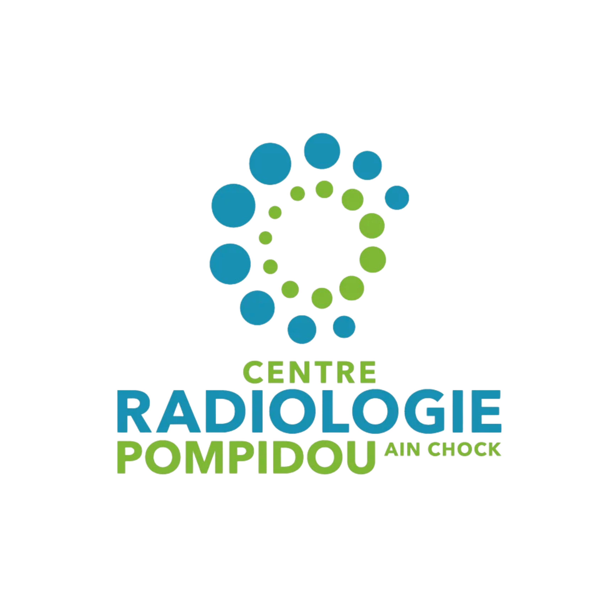

ACCUEIL
NOUS CONNAÎTRE
LES EXAMENS
IRM 1,5 T multicanaux ultra rapide
Scanner 64 barrettes Smart génération
Radiographie os, poumon et Smart Ortho
Échographie Doppler dernière génération
Mammographie numérique Low Dose
Panoramique dentaire & Cone Beam 2D/3D
OSTEODENSITOMÉTRIE corps entier
Carte Santé
ACTUALITÉS
Demandez Votre Carte De Santé
Rés. Koutoubia II, B4 AV Mohammed VI, Marrakech – Maroc
+212(0) 524 43 42 42
contact@victorhugo...
Vous êtes patient du Centre ?
Oui
Non
Mr
Mme
Vous préférez récupérer votre carte ?
Sur place
Par email
Envoyer